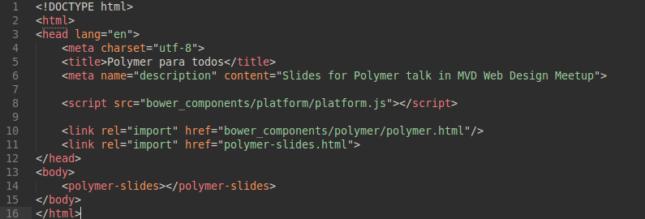

<link rel="import" href="stars-background.html">

<polymer-element name="using-elements" noscript>

    <template>
        <style>
            #section {
                width: 100%;
                height: 100%;
                left: 0px;
                top: 0px;
                position: absolute;
            }

            #paper_tabs {
                color: rgb(255, 255, 255);
                box-shadow: rgba(0, 0, 0, 0.2) 0px 3px 2px;
                height: 30px;
                background-color: #499E74;
            }

            #core_animated_pages {
                width: 100%;
                height: 100%;
                overflow: hidden;
                position: absolute;
                top: 0px;
                left: 0px;
                background-color: rgba(233, 211, 185, 0.55);
            }

            img{
                max-height: 40%;
                width: auto;
                margin-bottom: 50px;
            }
            span {
                font-size: 1.3em;
                color: #343434;
            }

            code {
                color: #444444;
                background-color: #CCCCCC;
            }

            #custom-tags span{
                color: #FFFFFF;
                background-color: #343434;
                font-size: 2.2em;
                padding: 20px;
                font-weight: 120%;
            }

            #custom-tags{
                background-image: url('img/mb.gif');
            }

            #shadow-dom span {
                font-size: 1.8em;
            }

        </style>
        <section id="section" layout vertical>
            <paper-tabs nobar selected="0" selectedindex="0" id="paper_tabs" slide-down>
                <paper-tab id="paper_tab" active>html imports</paper-tab>
                <paper-tab id="paper_tab1">custom tags</paper-tab>                            
                <paper-tab id="paper_tab2">shadow dom</paper-tab>
            </paper-tabs>
            <section id="section1" flex relative>
                <core-animated-pages 
                  selected="{{ $.paper_tabs.selected }}" 
                  lastselected="0" 
                  selectedindex="0" 
                  notap 
                  id="core_animated_pages" 
                  transitions="cross-fade slide-from-right" cross-fade>
                    <section id="htmlimports" vertical layout center center-justified>                                
                        
                        <span>The same way you link a stylesheet (CSS file), you import an external HTML document.</span>
                        <span>Instead of setting the <code>rel</code> attribute to <code>"stylesheet"</code></span>
                        <span>you just set it to <code>"import"</code>, and the <code>href</code> attribute pointing to</span>
                        <span>some html file with a polymer element inside.</span>
                        <br>
                        <small>*platform.js is the main js script file doing all this Polymer magic under the hood</small>
                    </section>
                    <section id="custom-tags" vertical layout center center-justified> 
                        <span>The whole thing about Polymer is the fact you can define <strong>your own</strong> html tags.</span>
                    </section>
                    <section id="shadow-dom" vertical layout center center-justified>
                        <span>The <strong>shadow dom</strong> concept is the central idea of all web-components paradigm.</span>
                        <br>
                        <span>So it is for polymer.</span>
                        <br>
                        <span>With the shadow dom, each web component encapsulates</span>
                        <span>it's own styling and scripting.</span>
                        <br>
                        <span>This means nothing from the outside can alter it's behaviour,</span> 
                        <span>neither can it affect the outside.</span>
                        <br>
                        <span>Unless we want it to do so.</span>
                        <br>
                        <span>Let's learn by example.</span>
                    </section>
                </core-animated-pages>
            </section>
        </section>
    </template>
</polymer-element>